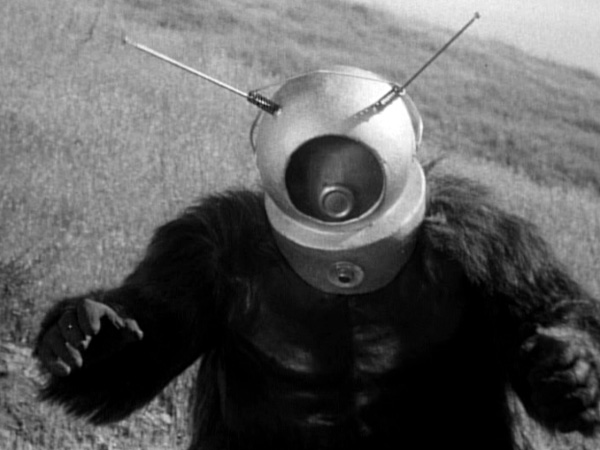

A screenshot from Robot Monster.
(Wade Williams distribution)
Item #: SCP-2006
Object Class: Keter
Special Containment Procedures: SCP-2006 is to be contained at Site 118 in an airtight containment cell. SCP-2006 must be constantly monitored for changes in form, which are to be noted immediately. All personnel coming into contact with SCP-2006 are required to enroll in an acting course with a focus on expressing fear and surprise.
Every month, SCP-2006 is to be shown at least one new extremely low-quality horror or science fiction movie containing horror elements. All interaction with SCP-2006 must confirm that SCP-2006 continues to believe that said works demonstrate a superb grasp of horror.
Description: SCP-2006 is an anomalous spherical entity roughly 50 centimeters in diameter when in its default state. SCP-2006's stated goal is to cause feelings of fear and/or horror in as many humans as possible. To accomplish this purpose, SCP-2006 possesses the ability to change its shape, mass, volume, density, chemical structure, and voice to any form that it desires. Currently, there is no known way to damage SCP-2006. The extent of its shape-shifting abilities is unknown, and is currently thought to be unlimited.
Currently, SCP-2006 has demonstrated a fondness for taking the forms of various entities and villains from the various horror and science fiction movies that it has witnessed. The most common form that SCP-2006 has taken is that of "Ro-Man" from the 1953 movie Robot Monster.
SCP-2006 is capable of speaking even when it possesses the form of an entity that is normally unable to speak. SCP-2006 will generally attempt to startle and/or scare any individual it comes into contact with, but after doing so, it will become affable and friendly. The reason behind this is currently unknown.
Although SCP-2006 has repeatedly stated its goal of causing as much fear as possible, SCP-2006 is a poor judge of concepts that cause fear in humans and constantly searches for new methods in which to accomplish its goal. This poor recognition extends to recognition of emotions in humans, as SCP-2006 is incapable of distinguishing between subtle differences in emotion that would be obvious to a human.
Addendum: The current Site Director for Site 118 has issued the following memorandum regarding SCP-2006:
I have been getting reports of some of the lax behavior regarding SCP-2006. Many personnel have been heard laughing at SCP-2006 during surveillance when it watches a new movie, or when it attempts to scare individuals. Some personnel have been heard questioning why SCP-2006 is classified as a Keter entity.
I am here to remind you that a Keter entity is a Keter entity, regardless of how innocuous it may seem. No, SCP-2006 is not a rampaging demi-god, nor is it a regenerating super lizard. However, it possesses the same level of danger as any other Keter that the Foundation has contained.
Think of SCP-2006's purpose. It wishes to scare people. Imagine what would happen if SCP-2006 broke containment, and found out what really scared people. Imagine if it saw the horror and fear of war, or the concepts of paranoia or phobias common to each and every human being.
Imagine if it found the true horror of a nuclear holocaust or an XK-Class scenario. Now couple that with an entity that possesses shape-shifting abilities with no known limits, and you'll understand why it's classified as Keter.
All personnel mentioned above have been suitably disciplined. I do not want to hear about this again.
Dr. Randall Owings
Site 118 Director